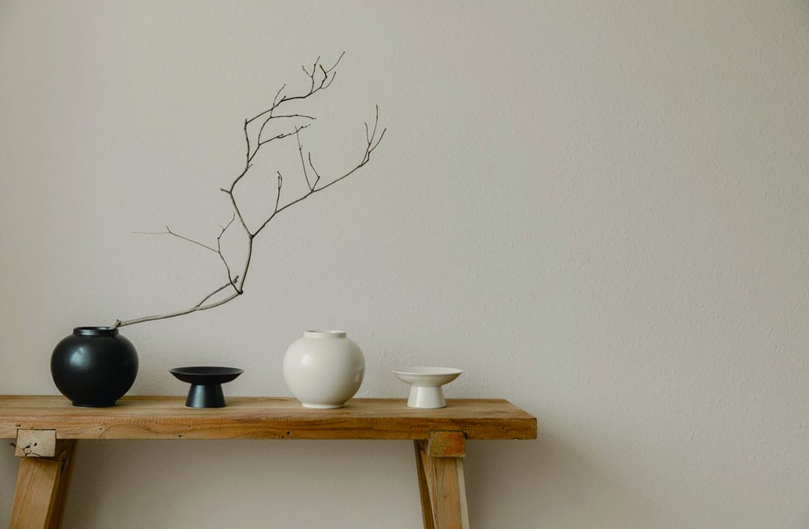
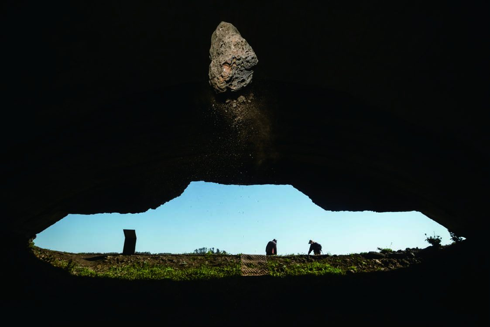
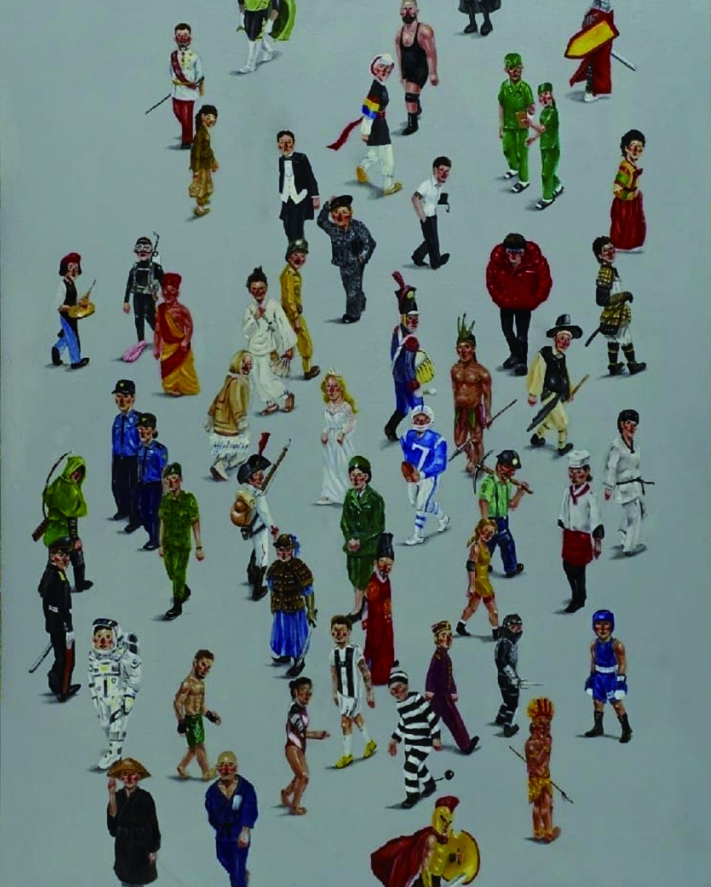
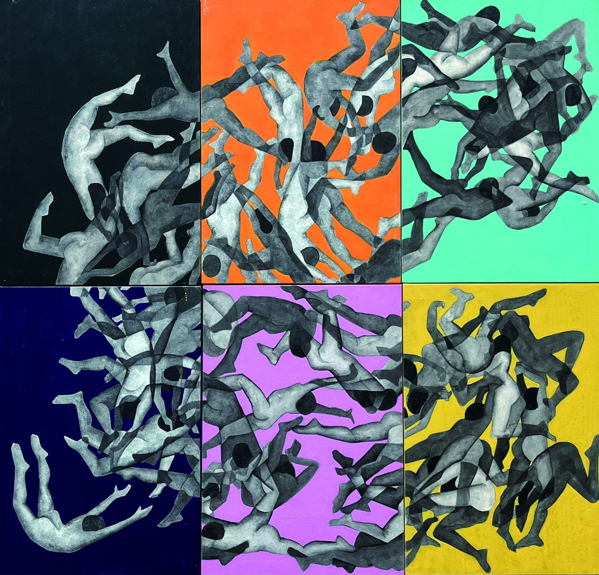
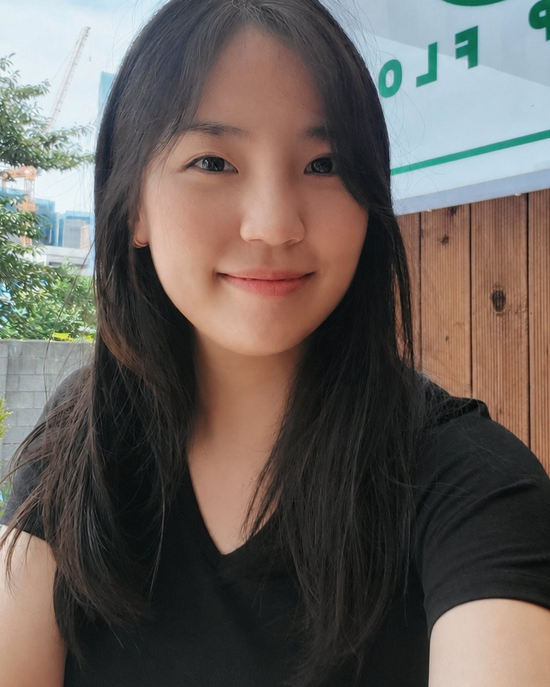

강진 청자촌에 뿌리를 둔 사단법인 한국청년문화예술인협회입니다. 2018년부터 장르와 지역을 넘어 청년 예술가들이 서로의 작업을 알아보고, 전시로 사람을 만나 왔습니다.

GIST 오룡아트홀 초대전 · 13인 47점

나주 천연염색박물관 · 20인 50여 점

한국전력거래소 로비 · 14인 177점

나주나빌레라문화센터 · 14인 43점

“청년들의 열정으로 문화예술에 새로운 활력을 불러일으키겠습니다.”
조각가 · 미디어아트 작가 · 미술학 박사. U.DOK STUDIO 대표. 2021년부터 협회를 이끌고 있습니다.